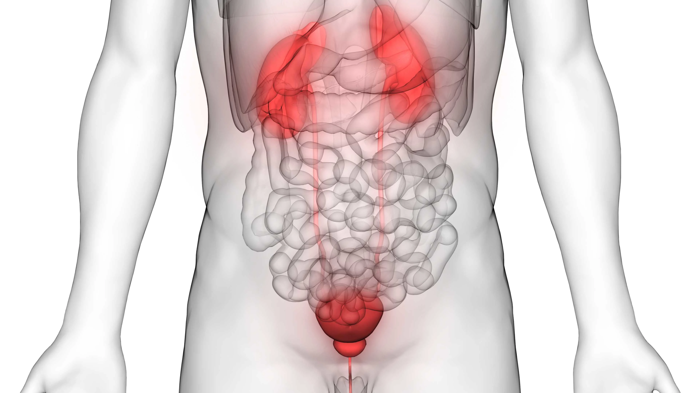

Neurogenic Bladder

CAUSES
Causes of neurogenic bladder include:
- Spina bifida (myelomeningocele): This disorder occurs when the spine doesn’t completely develop during the first month of pregnancy. Babies born with myelomeningocele often have paralysis or weakness that affects how their bladder works.
- Sacral agenesis: This is a condition in which parts of the lower spine are missing.
- Cerebral palsy: Cerebral palsy refers to a group of chronic (long-term) disorders that weaken a person's ability to control body movement and posture. These disorders result from injury to the motor areas of their brain. The problem causing cerebral palsy may occur while during development or after birth. Cerebral palsy isn’t always found during a child's first year of life.
SYMPTOMS
Symptoms of neurogenic bladder include:
- A weak or dribbling urinary stream.
- Frequent urination (urinating eight or more times daily).
- Urgency (a feeling or need to urinate immediately).
- Painful urination, which may mean there is a urinary tract infection.
- Urinary leakage.
DIAGNOSIS
Tests may include:
- Urodynamic studies: These bladder function tests measure how much urine your bladder can hold, the pressure within your bladder, how well urine flows, and how well your bladder empties when it is full. Special sensors may be placed on your skin near your urethra (the tube through which urine passes) or rectum to see if the muscles and nerves in those parts of your body are working properly.
- Cystoscopy: Your provider may perform this procedure to examine the inside of your bladder and urethra with the use of a small telescope (cystoscope).
- X-rays.
- Ultrasounds.
- Computed tomography (CT) scans.
- Magnetic resonance imaging (MRI) scans.
TREATMENTS
Some neurogenic bladder treatment options include:
- Lifestyle changes: These might include avoiding certain foods or drinks that can irritate your bladder. These include alcohol, certain caffeinated drinks like coffee and soda. Good blood glucose control for people with diabetes and constipation management can also help.
- Clean intermittent catheterization (CIC): Catheters are thin, flexible tubes that can be inserted through your urethra and into your bladder to drain urine. You can learn how to do this yourself so that you can empty your bladder on your schedule.
- Continuous catheterization: This method calls for a catheter to be worn at all times. The catheter is a small tube that can be placed through your urethra or through the lower abdominal wall (suprapubic tube).
- Drugs: Medications that treat neurogenic bladder include oxybutynin, tolterodine, mirabegron, solifenacin succinate and others.
- Injections of botulinum A toxin (Botox®): Your healthcare provider injects botulinum A toxin into your bladder or urinary sphincters.
- Bladder augmentation (augmentation cystoplasty): In this surgery, a surgeon removes segments of your intestine (sigmoid colon) and attaches them to the walls of your bladder. This reduces the bladder's internal pressure and increases its ability to store urine.
- Ileal conduit: Part of the small bowel is used to make a urine stoma. This stoma drains to a bag attached to the outside of the body.